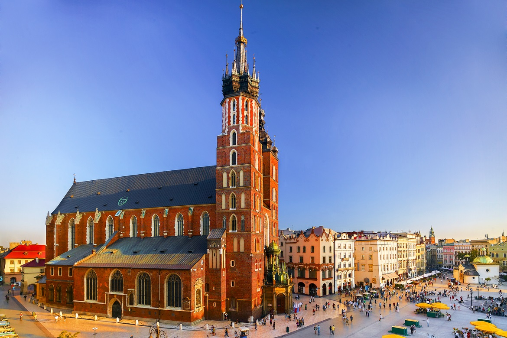

Kraków
formalna stolica Polski do 1795 r. i miasto koronacyjne oraz nekropolia królów Polski, od 1000 r. nieprzerwanie stolica diecezji krakowskiej (jednej z pięciu w ówczesnej Polsce), a od 1925 archidiecezji i metropolii.
Strona Krakowa
Warszawa
Warszawa, miasto stołeczne Warszawa– stolica Polski i województwa mazowieckiego, największe miasto w kraju, położone w jego centralnej części, na Nizinie Środkowomazowieckiej, na Mazowszu, nad Wisłą.
Strona Warszawy
Wrocław
Wrocław i (łac. Vratislavia lub Wratislavia lub Budorgis, niem. Breslau i, dś. Brassel, cz. Vratislav, węg. Boroszló) – miasto na prawach powiatu w południowo-zachodniej Polsce, siedziba władz województwa dolnośląskiego i powiatu wrocławskiego. Położone w Europie Środkowej, na Nizinie Śląskiej, nad Odrą i czterema jej dopływami. Jest historyczną stolicą Dolnego Śląska, a także całego Śląska.
Strona Wrocławia